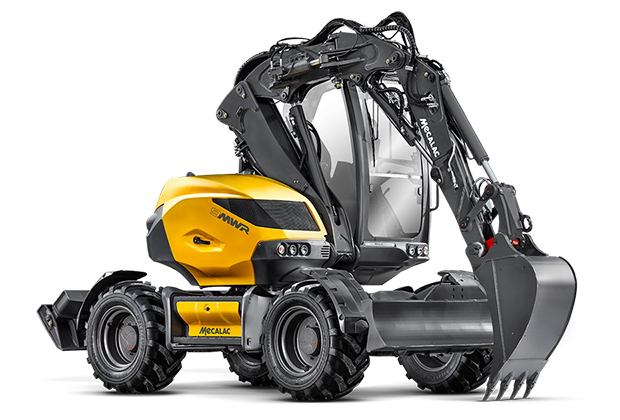

MECALAC 9MWR
Výkopy
Příprava základů, terénní výkopy a související zemní práce.
ZEMNÍ PRÁCE
Kolové rypadlo MECALAC 9MWR pro výkopy, rovnání terénu, nakládání a manipulaci s materiálem. Působíme hlavně v Královéhradeckém a Pardubickém kraji.

NAŠE SLUŽBY
MECALAC 9MWR
Příprava základů, terénní výkopy a související zemní práce.
MECALAC 9MWR
Úpravy a srovnání terénu podle podmínek staveniště.
MECALAC 9MWR
Nakládání materiálu, paletová vidlice a další příslušenství.
TECHNIKA
V původní nabídce je uvedeno kolové rypadlo MECALAC 9MWR s lopatami a paletovou vidlicí.
Pro zemní práce volejte strojníkovi na +420 725 280 255 nebo napište na info@al-leseni.cz.
POPTÁVKA
Sdělte nám místo, typ práce a termín. Pro přímou domluvu se strojníkem volejte +420 725 280 255.
Kontaktovat nás